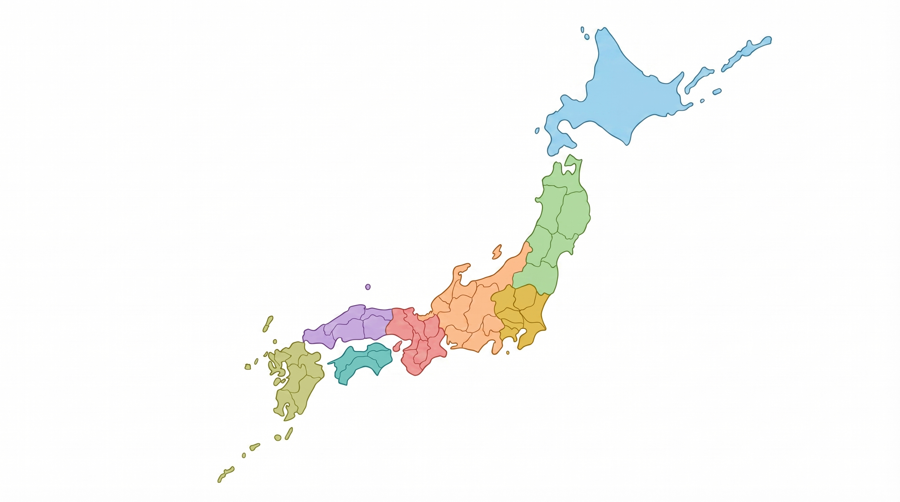

JOBLIUMは、就労継続支援A型・B型、就労移行支援などの障害者就労支援事業所を一括検索できるプラットフォームです。
仕事内容・地域・工賃・口コミなど多彩な条件で自分に合った事業所を見つけ、そのまま問い合わせ・応募まで完結できます。

あなたの就職活動をトータルサポート

障がい種別・仕事内容・地域など多様な条件で絞り込み。あなたにぴったりの事業所が見つかります。
在籍者・卒業者の生の声で事業所の実態を確認。安心して応募できます。
事業所に直接メッセージで相談・連絡。スムーズなコミュニケーションが可能です。
都道府県名をクリックして市区町村を選択できます

中国
九州
四国
沖縄
関西
北陸・甲信越
東海
北海道
東北
関東

メールアドレスだけで簡単登録。すぐに使い始められます。
地域・種別・仕事内容などで絞り込んで気に入った事業所を見つけましょう。
気になる事業所にそのまま応募。メッセージで事前相談も可能。
事業所を訪問し、自分に合うか確かめましょう。
「スタッフがとても親切で、自分のペースで働けています。JOBLIUMで見つけた事業所で本当によかったです。」

— 東京都 / 20代 / 就労継続A型利用中
「口コミがとても参考になりました。見学前から事業所の雰囲気がわかって安心して応募できました。」

— 埼玉県 / 30代 / 就労移行支援利用中
「直接メッセージで問い合わせができるのが便利でした。担当者の方が丁寧に対応してくださいました。」

— 大阪府 / 40代 / 就労継続B型卒業